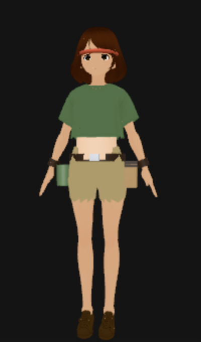

Restyle a VRM into an explorer with the JS Shell #
A .vrm is a glTF binary with a humanoid skeleton and a set of facial blendshapes — which means Strata imports it like any other rigged GLB. This tutorial takes the free female base model from hinzka/52blendshapes-for-VRoid-face and restyles it as a generic ruins-exploring expedition explorer using nothing but the JS Shell: auburn hair and a tan, a sage-green crop top and sand shorts cut out of the existing clothes, a belt, a satchel, a canteen, wristbands and a headband attached to the skeleton, lowered arms and a smirk. The target is an original archetype, not a particular character — the same steps restyle the base model into anything you can describe. Open the editor, open the Shell tab, and paste each block in order.

VRoid_V110_Female_v1.1.3.vrm (about 23 MB); the male one sits next to it. These steps use the female model's measurements — heights in metres, taken from its skeleton — so they won't line up on the male one without adjusting the numbers.1 Download and import the VRM #
Open the repository, download VRoid_V110_Female_v1.1.3.vrm (use the Download raw file button on its page, or clone the repo), then bring it into the editor either way:
- Press the Import icon in the top bar and choose the
.vrmfile, or drag the file onto the editor window. - A progress banner shows reading, then parsing, and then the Import glTF dialog appears. Leave the defaults and click OK. Don't turn on geometry compression for a rigged character: Strata skips mesh simplification for skinned meshes and ones with morph targets, so it would do nothing useful here.
Rotation Y = 180° on the imported group in the Object panel. Everything below is written in world coordinates, so that turn doesn't change any of the numbers.2 See what you imported #
The shell runs every command in its own scope, so a const from one block is gone in the next. Anything you want to keep goes on window. Start with two handles: R, the imported model, and B, which finds one of the VRM humanoid bones by its short name (C_Hips, L_Hand, R_UpperLeg…). Then list the material names — they are how you'll address each part:
window.R = scene.children.find(o => o.name.endsWith('.vrm'));
window.B = name => R.getObjectByName('J_Bip_' + name);
const mats = new Set();
R.traverse(o => { if (o.isMesh) [].concat(o.material).forEach(m => mats.add(m.name)); });
[...mats]Fourteen materials come back — …Face_00_SKIN, …Body_00_SKIN, …EyeIris_00_EYE, …FaceBrow_00_FACE, …HairBack_00_HAIR, …Hair_00_HAIR, and the three clothing pieces …Tops_01_CLOTH, …Bottoms_01_CLOTH and …Shoes_01_CLOTH. The face meshes carry the blendshapes:
const face = R.getObjectByName('Face').children.find(o => o.morphTargetDictionary);
const shapes = Object.keys(face.morphTargetDictionary);
shapes.length + ' shapes, ' + shapes.filter(n => /^[a-z]/.test(n)).length + ' of them ARKit (' + shapes.find(n => /^[a-z]/.test(n)) + '…)'That prints 124 shapes, 52 of them ARKit (browInnerUp…): the VRM Fcl_… presets first, then the 52 ARKit shapes this model is known for (browInnerUp, jawOpen, mouthSmileLeft…), then a few underscore-prefixed helper shapes.
3 Recolor hair, skin and clothes #
These materials are textured, so setting a color tints the texture (the color multiplies the map) rather than replacing it. That's what you want for skin and hair — the shading and the face detail survive. A tiny helper applies a color to every material whose name matches a pattern:
window.tint = (re, hex) => R.traverse(o => {
if (o.isMesh) [].concat(o.material).forEach(m => { if (re.test(m.name)) m.color.set(hex); });
});
tint(/HAIR/, 0x6e3216); // auburn hair
tint(/SKIN/, 0xeabf9c); // warm tan, face and body together
tint(/Tops/, 0x5f7f5a); // sage green
tint(/Shoes/, 0x4a3320); // brown boots
tint(/EyeIris/, 0x6a4a2a); // brown eyes
tint(/Brow|Eyelash|Eyeline/, 0x3a1d0f);
'tinted'The viewport redraws on demand, so if nothing seems to change, move the mouse over it or orbit a little. The original hair is pale grey and the original shirt is white, so both pick up the new colors cleanly; the black trousers can't be tinted at all, which is why the next step replaces their texture.
4 Cut a crop top and shorts #
The clothes are one mesh per garment, so a new silhouette is a matter of deleting the triangles you don't want. cutBelow(mesh, y) keeps only the triangles whose centre is above a world height, then pushes any vertices still below that height up onto it so the hem is flat. It uses applyBoneTransform to find where each vertex really is on the posed skeleton, and it works on a clone of the geometry so nothing else sharing the original is touched:
window.cutBelow = (mesh, y) => {
mesh.updateMatrixWorld(true);
const g = mesh.geometry.clone(), pos = g.attributes.position, idx = g.index.array;
const wy = new Float32Array(pos.count), v = new THREE.Vector3();
for (let i = 0; i < pos.count; i++) {
v.fromBufferAttribute(pos, i);
mesh.applyBoneTransform(i, v); // where the skinned vertex really is
wy[i] = v.applyMatrix4(mesh.matrixWorld).y;
}
const keep = [];
for (let i = 0; i < idx.length; i += 3)
if ((wy[idx[i]] + wy[idx[i + 1]] + wy[idx[i + 2]]) / 3 >= y) keep.push(idx[i], idx[i + 1], idx[i + 2]);
for (let i = 0; i < pos.count; i++) if (wy[i] < y) pos.setY(i, pos.getY(i) + y - wy[i]); // flatten the hem
g.setIndex(keep);
g.computeBoundingSphere();
mesh.geometry = g;
};
R.traverse(o => {
if (!o.isMesh) return;
const m = [].concat(o.material)[0];
if (/Bottoms/.test(m.name)) { cutBelow(o, 0.7); m.map = null; m.alphaTest = 0; m.color.set(0xb9a273); }
if (/Tops/.test(m.name)) cutBelow(o, 1.03);
});
'cut'Heights are in metres from the floor: 0.7 is the upper thigh, 1.03 is under the ribs. The trousers get a flat brown color instead of the tint, because the original texture is dark and a dark texture times brown is still dark — and its transparency cut-out (alphaTest) was what made them capri length, so that goes too.
5 Strap on the gear #
The gear is plain three.js primitives parented to bones, so it follows the skeleton when the character moves. prop builds a mesh, places it using world coordinates, then calls bone.attach(mesh), which re-parents it while keeping that world placement. Every position below comes from the bone positions of this model — hips at y ≈ 0.91, hands at x ≈ ±0.54:
window.prop = (bone, geo, hex, pos, o = {}) => {
const m = new THREE.Mesh(geo, new THREE.MeshStandardMaterial({ color: hex, roughness: o.rough ?? 0.7, metalness: o.metal ?? 0, side: THREE.DoubleSide }));
m.name = o.name; m.position.set(...pos);
if (o.rot) m.rotation.set(...o.rot);
if (o.scale) m.scale.set(...o.scale);
scene.add(m); // place it in world coordinates…
scene.updateMatrixWorld(true);
B(bone).attach(m); // …then parent it to the bone, keeping that placement
return m;
};
'prop helper ready'Now the gear itself: a skin-colored midriff band, a belt with a buckle, a satchel on the left hip and a canteen on the right, a leather wristband on each arm, and a red headband. The for loop runs once for each arm by flipping the sign of x:
const leather = 0x2a1b10, tan = 0x8b6a3e, steel = 0x8b8f94, skin = 0xeabf9c;
prop('C_Spine', new THREE.CylinderGeometry(0.104, 0.108, 0.13, 28, 1, true), skin, [0, 0.99, 0.07], { scale: [1, 1, 0.8], name: 'midriff' });
prop('C_Hips', new THREE.CylinderGeometry(0.15, 0.15, 0.04, 28, 1, true), leather, [0, 0.935, 0.035], { scale: [1, 1, 0.78], name: 'belt' });
prop('C_Hips', new THREE.BoxGeometry(0.05, 0.035, 0.02), steel, [0, 0.935, 0.155], { metal: 0.8, rough: 0.35, name: 'buckle' });
prop('C_Hips', new THREE.BoxGeometry(0.06, 0.12, 0.14), tan, [0.18, 0.84, 0.03], { name: 'satchel' });
prop('C_Hips', new THREE.BoxGeometry(0.065, 0.03, 0.15), leather, [0.18, 0.9, 0.03], { name: 'satchel-flap' });
prop('C_Hips', new THREE.CylinderGeometry(0.04, 0.04, 0.11, 20), 0x4f6b4a, [-0.18, 0.84, 0.03], { rough: 0.5, name: 'canteen' });
for (const s of [1, -1])
prop((s > 0 ? 'L' : 'R') + '_LowerArm', new THREE.CylinderGeometry(0.03, 0.03, 0.04, 16, 1, true), leather, [s * 0.5, 1.262, 0.013], { rot: [0, 0, Math.PI / 2], name: 'wristband' });
prop('C_Head', new THREE.TorusGeometry(0.1, 0.011, 8, 36), 0xa63d2a, [0, 1.47, 0], { rot: [Math.PI / 2, 0, 0], scale: [1, 1.15, 1], name: 'headband' });
'gear on'The model faces +Z in world space, so positive z is the front of the body (the buckle) and negative z is the back. L_ bones are on the character's left, which is world +X from the front — so the satchel is on her left hip and the canteen on her right.
toon(R) in the Shell: the character and the props become hard-banded toon with outlines, using the toon values stored in the VRM file. If the scene has no light, it adds a key and a sky light, since toon needs light to show. See the toon look guide for the options (shade colour, rim, outline width).6 Lower the arms and pose a smirk #
VRM models import in a T-pose. Rotating the two upper-arm bones about their local Z lowers the arms — the signs are opposite because the left and right bones mirror each other:
B('L_UpperArm').rotation.z = 1.2;
B('R_UpperArm').rotation.z = -1.2;
'arms down'For the face, a helper sets a blendshape on every mesh that has it (the face is split across nine meshes that share the same shape list), by name:
window.express = (shape, value) => R.traverse(o => {
const i = o.morphTargetDictionary?.[shape];
if (i !== undefined) o.morphTargetInfluences[i] = value;
});
express('mouthSmileLeft', 0.45);
express('mouthSmileRight', 0.45);
express('browInnerUp', 0.15);
'smirk'Other shapes worth trying: jawOpen, eyeBlinkLeft / eyeBlinkRight, mouthPucker, browDownLeft, eyeLookUpLeft, or the VRM presets Fcl_ALL_Joy and Fcl_ALL_Surprised. They're ordinary morph target influences, so the Universal Timeline can keyframe them like any other number.
7 Frame the shot and take a snapshot #
Move the viewport camera to a full-length view, and tell the orbit controls the same target so the next mouse drag pivots around her waist:
camera.position.set(0.5, 1.0, 2.2);
camera.lookAt(0, 0.85, 0);
editor.controls.center.set(0, 0.85, 0);
editor.signals.cameraChanged.dispatch(camera);
'framed'Click the skeleton icon in the top bar (Hide Skeleton Helpers) to turn off the green bone lines, then open the Render tab. The Snapshot section renders the scene once, offscreen, with no grid, gizmos or helpers: pick Current view, a size, PNG, and press Take Snapshot. Tick Transparent for a cut-out with no background.
8 Save it #
Everything above is ordinary scene state — geometry, materials, bone rotations, parented props, morph influences — so a normal commit captures it. Set your repository and token in the Git tab, then use Commit Scene. A quick sanity check before you commit:
[R.getObjectByName('belt') !== undefined, B('L_UpperArm').rotation.z, scene.getObjectByName('headband').parent.name]That should print [true, 1.2, "J_Bip_C_Head"] — the belt exists, the arm is lowered, and the headband is parented to the head bone.
Credits and licences #
People #
- Tejaswi Gowda (script)
Assets #
- VRoid_V110_Female_v1.1.3.vrm: hinzka, 52blendshapes-for-VRoid-face (credit is not required; given anyway) Licence: Custom terms in the repository README: free personal and commercial use, redistribution allowed, no credit required (no licence file).
Tools #
None used.